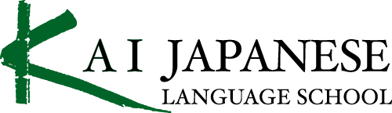
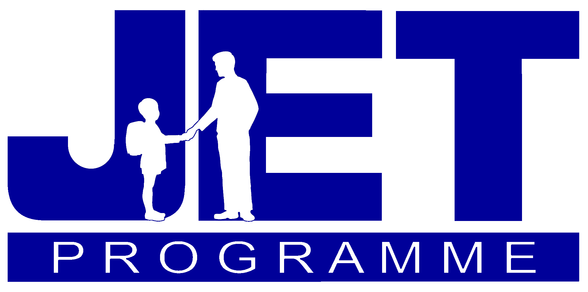

Markit On Demand
June 2014 - July 2014Career
Web Developer Trainee
Participated in Markit On Demand's four-week web developer training program that focuses on building complex web applications using HTML, CSS, Javascript, C#, Ajax, as well as proprietary development libraries and frameworks.RefactorU
April 2014 - June 2014Education
Student Hacker
RefactorU is a selective, 10-week, hands-on, web development bootcamp in Boulder, CO. The curriculum covers HTML5, CSS3, JavaScript and jQuery on the front-end and Node.js, WebSocket, Jasmine, SQL, MongoDB, Python and JSON on the back-end. Other tools & skills include the command line, Git/GitHub, pair programming, behavior driven development and Sublime Text.Niconico
Aug. 2012 - Aug. 2013Career
Head of English Operations
Dwango runs the "Youtube of Japan", Niconico. I joined just two months before their major multilingual release. Upon release, I took over a large number of operations responsibilities as the sole native English speaker.Key Accomplishments Include:
- Grew a stagnent Facebook fan page to 40k+ users
- Increased Facebook fan page content generated clicks by 786%
- Increased daily video commenting by 58%
Kizuna Across Cultures
Sept. 2012 - March 2013Volunteer
Global Classmates Coordinator
 Kizuna Across Cultures (KAC) is an NPO committed to inspiring youth in Japan and the United States to look beyond their communities, embrace diversity, and become active global citizens.
Kizuna Across Cultures (KAC) is an NPO committed to inspiring youth in Japan and the United States to look beyond their communities, embrace diversity, and become active global citizens.
BizReach & RegionUP
Oct. 2011 - June 2012Career
Operations Manager
BizReach is a venture capital company running a member subscription job site based in Tokyo. I joined as they were preparing an Asian-Pacific English based service and fulfilled the roles of translator, content writer, and customer support as their first non-Japanese employee.Waseda University
April 2011 - Nov. 2011Education
Japanese Literature Research Student
Audited several graduate and undergraduate lectures and seminars in modern and contemporary Japanese Literature.Yamasa & Kai Language School
Sept. 2010 - Aug. 2011Education
Japanese Language Student
 9 months at two extensive Japanese language study programs. Placed 2nd in 150+ students in annual Kanji Contest. Participated in extracurricular activities such as calligraphy, haiku/senryu writing, and international events.
9 months at two extensive Japanese language study programs. Placed 2nd in 150+ students in annual Kanji Contest. Participated in extracurricular activities such as calligraphy, haiku/senryu writing, and international events.
JET Programme
Aug. 2007 - Aug. 2010Career
Assistant Language Teacher
 The JET Programme is Japan’s largest and oldest grassroots cultural exchange/language program (sponsored by the Japanese Ministry of Foreign Exchange). I taught and team-taught English at three middle schools and five elementary schools in Aizuwakamatsu, Fukushima.University of Missouri-Columbia
May 2003 - May 2007Education
Bachelor of Arts in International Studies
- Vice President of Geography Club
- Active member of Woman's Center and a certified Peer Rape Educator
- Sustain Mizzou environmental/recycling advocacy group volunteer
Web & Technical Skills
- AJAX
- Bootstrap
- CSS/Sass/Stylus
- Git/Github
- Google Analytics
- Graphic/UI Design
- HTML
- Jade
- JavaScript/Coffeescript
- jQuery
- Mongo(db)
- NodeJS/Express
- Social Media
Non-Technical Skills
- Blogging & Newsletters
- Communication
- Copywriting
- Customer Support
- Editing
- Japanese
- Translation & Localization